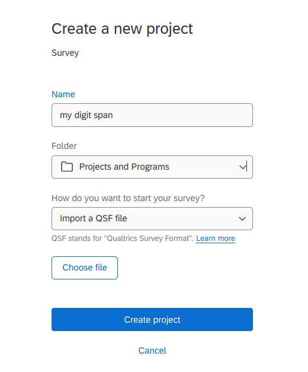
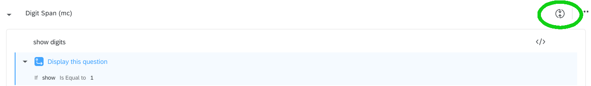
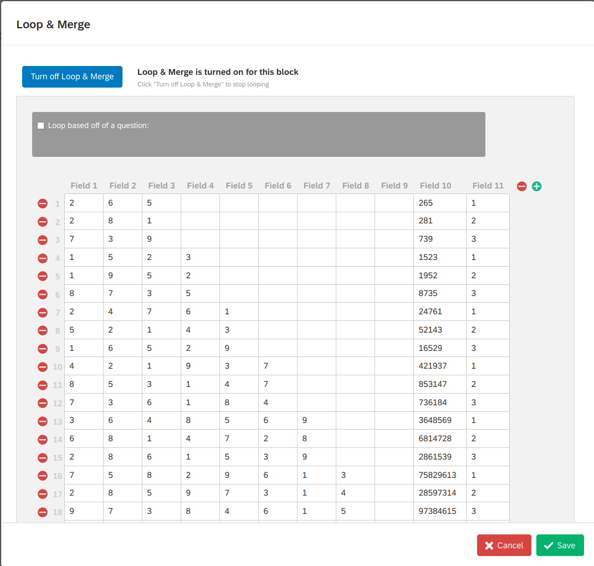
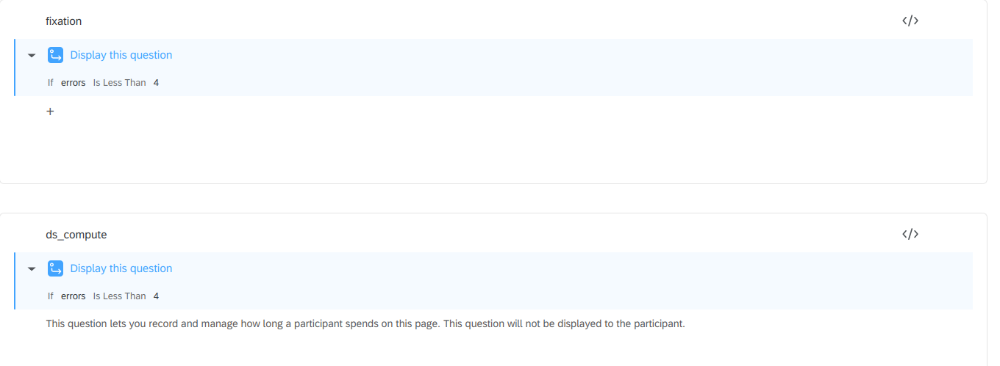
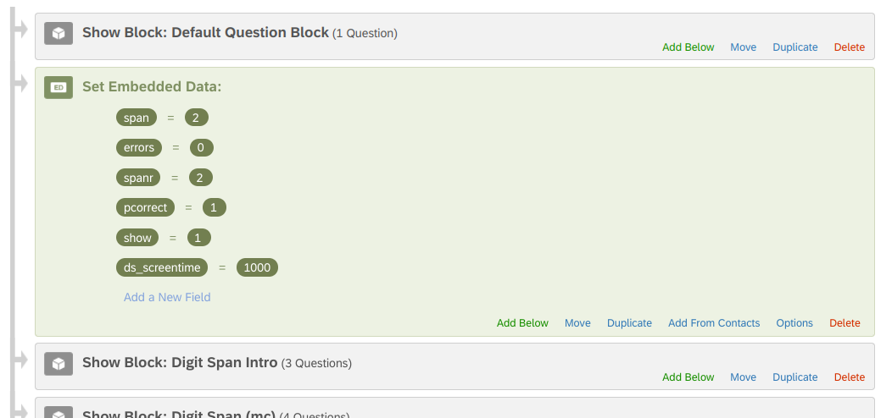

The digit span test shows a series of sequences of digits of increasing length. The participant should look at the digits sequence and type it in when the last digit of the sequence disappears.
In this implementation, each digit is shown for T millisecond (T=1000 by default but can be changed). The first sequence shows K (K=3 by default but it can be changed) digits. If the participants gets it right, the next sequence is of K+1 digits. If the participants gets it wrong, another sequence of length K is shown. The task ends and so the memory span is defined when the participant makes three consecutive errors for a given sequence length or when the span is 9 (this also can be changed easily).
The same task is duplicated asking the participant to type the digit sequence in reverse order.
In the data produced one finds the time needed to respond to each
sequence (usually not important) and two variable, named
span and spanr that contains the resulting
memory span of the participant.
The test is implemented with a minimum of javascript code. It does not require any JS library and does not depend on the format of the survey it is included.
Download the Digit_Span_Eng.qsf and login to your
qualtrics account. Create a new project and select the to import an QSF
file.

Choose your file and hit Create Project. If everything
goes as planned, your are ready to go.
It is likely that you want to import the test into an existing project, with other tests and questionnaires. Due to some limitations in qualtrics system, you cannot save the survey into the library and import it in another project. This operation would not work because if you save a survey in the library, loop and merge setup of the survery will be lost.
Thus, simply import the task using Copy from Existing Survery function: Add a block, then
and then
The task shows digit sequences to be recalled in the diplayed order. When the span is determined, a second block of sequences is shown, to be remembered in reverse order.
By default, the program allows for digits sequences starting from
length 3 up to length 9. The displayed sequences are defined in the
loop and merge, in the Digit Span block
(second block).


The loop and merge data displayed here shows 3 sequences of digits for each span: 265, 281, 739 for length 3, 1523, 1952 and 8735 for length 4, and so on. You can change the digits as you like.
By default, the task shows digit sequences of length up to 9. If you want to be able to measure more than that, just add 3 length-10 sequences for span 10, 3 11-length sequences for span 11, and so forth.
In the current implementation, the task presents participants with a sequence of length N, and if they recall it correctly, the task progresses to a sequence of length N+1. However, if participants do not recall the sequence correctly, another sequence of length N is shown. If participants are successful, the task advances to sequences of length N+1, but if they are unsuccessful, another sequence of length N is presented. When participants provide 3 incorrect responses, the span is determined, and the task moves on to the next block, which is the reverse order block. Overall, participants have three opportunities to recall the sequences correctly.
If you want to give the participant K opportunities, include in the
Loop and Merge K sequences for each span length. Then go to
the fixation and ds_compute questions and set
the display logit to Less then K+1. For 3 chances, set it
to 4.

By default, each digit is shown on the screen for 1 second (1000
milliseconds). If you want to change the exposure time, go to the
embedded data setup in the survey flow and set the
ds_screentime variable to the milliseconds you prefer.

The reverse order block has the same structure that the forward block. Sequences to be shown are set up in the merge and loop section of the block.